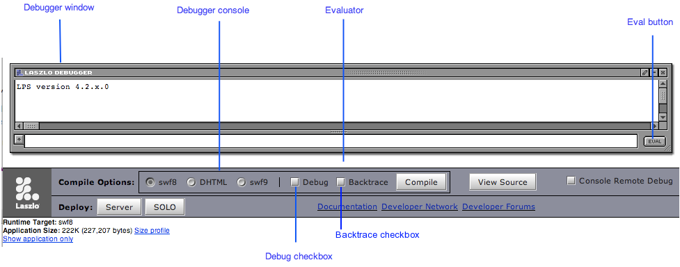

Openlaszlo provides a powerful debugger which you can use either embedded in the application or as a separate ("remote") process. In addition, when you are compiling applications for deployment to DHTML, you may benefit from using tools for debugging in that environment.
When you run an application with debugging enabled, the application is compiled with instrumentation to detect runtime errors, and the debugger window appears within the application canvas. The debugger provides these features:
The top portion of the debug window displays a scrolling list of debug messages. These
include warning messages that the OpenLaszlo Runtime Library displays, as well as the
arguments to calls to Debug.debug().
The command-line portion of the debug window can be used to evaluate JavaScript statements and expressions within the context of the running application. Use this to inspect the program state, to test the behavior of functions and methods on various arguments, and to explore the LZX API.
Warnings for runtime errors such as undefined variables and functions are detected, and printed to the debug console.

Debugging may cause the application to run more slowly, even if the debugger window is not visible.
There are three ways to turn on the debugger in your application:
The debugger is enabled on if the canvas debug attribute is set to true:
Example 51.1. The canvas debug attribute
<canvas width="100%" height="125" debug="true"> <debug y="5" /> </canvas>
Check the Debug checkbox on the developer
console to request a copy of the application with debugging enabled. This is
equivalent to recompiling the application with the debug="true".
Edit the URL that is used to request the application to include the
debug=true query parameter. This is equivalent to checking the
Debug checkbox in the developer console.
See the OpenLaszlo System Administrator's Guide for more information about request types.
Enabling the debugger using one of the methods described in Section 2, “Enabling the Debugger” has two effects:
It includes the debugger visual component. This displays debug messages, and has a command line interface for evaluating JavaScript statements.
It compiles the application with additional instrumentation to perform runtime error checking. Certain classes of erroneous code (below) result in warnings that are logged to the debug window.
A program that is compiled with runtime error checking will contain code that checks for the following conditions:
Table 51.1. Runtime error checks
| Condition | Example | Notes |
|---|---|---|
| Reference to undefined variable |
var w = canvs.width
| canvs is not defined. (There is a global variable named
canvas, instead.) |
| Reference to undefined property |
var w = canvas.widt
[a]
| canvas does not have a widt property. (The
name of the property is canvas.width.) |
| Call to undefined method |
lz.Browser.getVerson()
| lz.Browser.getVerson (with no "i") is not defined. |
| Call to undefined function |
var n = parseInteger("123")
| parseInteger is not defined. (There is a JavaScript function
parseInt.) |
| Call to non-function |
var w = canvas.width()
| canvas.width is a Number, not a Function. |
[a] The debugger does not warn about undefined references if the subscript
notation is used: | ||
Each runtime exception warning is printed once per line per program run, not once each time the exception is encountered. The following program will print one warning, not ten.
Example 51.2. Runtime exceptions printed once per line
<canvas debug="true" height="150" width="100%">
<debug y="10" />
<handler name="oninit"><![CDATA[
for (var i = 0; i < 10; i ++) {
canvas.width();
}
]]></handler>
</canvas>
Turning on runtime error checking makes an application bigger and slower. You should only perform size and speed optimization on the non-debug version of a program. Nonetheless, you will frequently want to run the debug warning to see whether you have introduced any runtime errors.
The top portion of the debugger window is the debugger log. Use Debug.write() or
Debug.format() (or one of its variants) to print to the debugger log.
These methods are variadic: they take any number of arguments. The text
representations of the arguments are printed to the debugger log, separated by spaces.
Example 51.3. Logging to the debugger
<canvas debug="true" height="200" width="100%">
<debug x="160" y="5" height="150" width="300" />
<script>Debug.debug('user code');</script>
<button text="Get x, y" width="150" height="150"
onclick="Debug.debug('click: x=%d, y=%d', getMouse('x'), getMouse('y'))" />
</canvas>
Debug.write() is the simplest way to log to the debugger, but it's
often a better strategy to use Debug.format() or one of its variants
(Debug.debug(), Debug.info(),
Debug.warn(), and Debug.error(). These methods give you
more control over the format of the output. See the reference pages for Debug and lz.Formatter for a complete description and
examples. In addition, you can control which messages are logged to the debugger using Debug.messageLevel.
Some object are inspectable. See Section 8, “Inspecting Objects” for more about the inspect feature of the debugger. See
Section 11.2, “Customizing Debug.write()
” to see how to customize the display of objects
within the debugger.
There simplest way to get LPS version information is to use
canvas.lpsversion.
Example 51.4. Using canvas.lpsversion
<canvas width="100%" height="200" debug="true">
<debug x="5" y="50" height="100" />
<handler name="oninit">
Debug.debug('LPS version %s', canvas.lpsversion)
</handler>
</canvas>
You can get more information, for example the build number and target runtime, by using
Debug.versionInfo().
Example 51.5. Using Debug.versionInfo()
<canvas width="100%" height="225" debug="true">
<debug x="5" y="5" height="200" />
<handler name="oninit">
Debug.versionInfo()
</handler>
</canvas>
While the previous two methods give you version information, if you want to generat a full bug report, see Section 9, “Generating a bug report”.
The bottom portion of the debugger window is the evaluator. This is a command-line interface for evaluating
JavaScript expressions and statements within the application. Enter a JavaScript statement
into this area and press the Enter key (in single-line mode) or the Evaluate button (in
multi-line mode) to evaluate the statement within the application. If the statement is an
expression, its result (if the result is not undefined) is printed to the
debugger log. If it is a statement but not an expression, it is executed for effect.
Examples of expressions are canvas.x, 1+2, and
lz.Browser.LoadURL('http://www.laszlosystems.com/', '_blank'). (The last
expression returns the value undefined, so the debugger does not print the
expression value in the debugger log.) An example of a non-expression statements is
for (int i = 0; i < 10; i++) Debug.debug("%d", i). This is
evaluated for effect, and the statement itself does not result in a value, although each
execution of the loop prints the value of i to the debugger log.
The debugger can be used to define global variables. Use the var
keyword to define a new global variable. For example, after evaluating var
n=100, evaluating n+1 will print the value
101.
The var keyword is only necessary to define new global variables. You do not need it to change the value of existing
variables. For example, after evaluating var n=100, you can evaluate
n=200 to change the value of n. You do not need to
evaluate var n=200 (although the extra var is
harmless.)
You can also use var to create new global functions. var f =
function (x) {return x+1} creates a new function named f, which
can be used in subsequent expressions such as f(1).
Consider the following debugger evaluations. Notice that the second case is terminated with a semicolon; otherwise the expressions are identical:
lzx> function foo () { return 'Fu'; }
Function#0| foo
lzx> foo
WARNING: interactive-eval-2:-1: reference to undefined variable 'foo'
lzx> function foo () { return 'Fu'; };
lzx> foo
Function#2| foo
In the first case, a function named foo is created, but it is not
the value of the global foo. Instead the Debug evaluator returns a value
which is that function object. In the second case, the evaluator does not return a value,
and the global foo
is defined to be the function. Why is that?
The answer is that the debugger evaluator will first try to evaluate what you type as an expression, and if that fails, it will try to evaluate it as a statement. The second form is clearly not an expression (think of what you type as having parentheses around it—the semi-colon forces the second form to be a statement list, with an empty second statement). This distinction, although subtle, is correct ECMAscript semantics. It is not whether you name a function or not that determines when a global definition will be made; rather, two things must be true:
the function must be named, and
the function declaration must occur in a statement context.
If the function declaration occurs in an expression context, all you have done is to create a named function object as the value of that expression, you have not defined that name as the function.
Therefore, if you ever wonder why when you define a function in the debugger it does not behave as you expect, take a clue from what the evaluator prints out: if it prints out a function object, all you did was create a function, not define a function. Add the semi-colon after your definition and you will define the function (and not see a value printed).
TODO: Explain the single-line and multi-line mode of the evaluator
TODO: Screenshot
Within a debugger expression, _ refers to the value of the previous
expression. For example, after evaluating canvas.width to display the
width of the canvas, you can evaluate the expression _/2 to display half
this width.
The debugger defines the following variables:
_
The result of the previous expression with a non-undefined value.
__ [two underscore characters])The result of the expression prior to the previous expression.
___ [three underscore characters]The result of the expression prior to the __ expression.
Explain the style bindings of properties on a node For each attribute of the node that has
a $style binding, the CSS rules that apply to the node that could affect
that binding are displayed. The rules are displayed (with their source) from the most-specific
to the least specific, and the style names and values of the rule that apply to this node are
displayed. Values that are superseded by more specific rules are displayed in italics.
The following example demonstrates the use of
Debug.explainStyleBindings(). Click on the color buttons to toggle the
colors; click on the color swatches to see the CSS description.
Example 51.6. Dynamic CSS
<canvas width="100%" height="500" debug="true">
<debug x="30%" width="65%" y="5%" height="90%" />
<stylesheet>
/* default, should only be seen if things are broken */
colorswatch { background-color: orange }
/* Static for buttons */
colorbutton[color=red] {background-color: red }
/* `lime` is the HTML name for rgb(0,255,0) */
colorbutton[color=green] {background-color: lime }
colorbutton[color=blue] {background-color: blue }
/* dynamic single selectors that apply to individual swatches */
[red=off] colorswatch { background-color: cyan; opacity: 0.2 }
[red=on] colorswatch { background-color: red; opacity: 0.95 }
[green=off] colorswatch { background-color: magenta; opacity: 0.2 }
[green=on] colorswatch { background-color: lime; opacity: 0.95 }
[blue=off] colorswatch { background-color: yellow; opacity: 0.2 }
[blue=on] colorswatch { background-color: blue; opacity: 0.95 }
/* dynamic compound selectors that apply to mixer colorswatch */
[red=off] [green=off] [blue=off] [name=mixer] colorswatch { background-color: black; opacity: 1 }
[red=off] [green=off] [blue=on] [name=mixer] colorswatch { background-color: blue; opacity: 1 }
[red=off] [green=on] [blue=off] [name=mixer] colorswatch { background-color: lime; opacity: 1 }
[red=off] [green=on] [blue=on] [name=mixer] colorswatch { background-color: cyan; opacity: 1 }
[red=on] [green=off] [blue=off] [name=mixer] colorswatch { background-color: red; opacity: 1 }
[red=on] [green=off] [blue=on] [name=mixer] colorswatch { background-color: magenta; opacity: 1 }
[red=on] [green=on] [blue=off] [name=mixer] colorswatch { background-color: yellow; opacity: 1 }
[red=on] [green=on] [blue=on] [name=mixer] colorswatch { background-color: white; opacity: 1 }
</stylesheet>
Evaluating Debug.debug(, where object)
is an expression that evaluates to a JavaScript object, displays an inspectable representation of the object in the debugger
(not the actual object). Long objects are abbreviated based on the value of
object
Debug.printLength (see Section 11, “Configuring the Debugger”).
Abbreviated objects are shown enclosed in double angle quotes, with an ellipsis indicating
abbreviation like this:
«object...»
If you inspect the abbreviated output, it will print the full object.
Clicking on an inspectable object displays its non-private properties and their values. Those values which are objects are also displayed as inspectable objects, so that they can be clicked on as well.
An object's private properties are those whose names begin with
$ or __ (two underscore characters). These names are
used by the compiler and by the OpenLaszlo Runtime Library implementation, respectively, and
are not part of the documented API for the object.
An inspectable object can be an OpenLaszlo Runtime Library
object such as a window or lz.dataset, or a built-in JavaScript object: for example,
an array such as [1, 2, 3], or a Object such as {a: 1, b: 2}.
The Debug.inspect() function also displays the object and its
properties. Evaluating Debug.inspect( is
equivalent to evaluating object)Debug.debug( and then
clicking on the object's representation.object)
Debug.write() behaves differently depending on whether its argument is a
string or a non-string object. Note the difference between the two calls to
Debug.write() in the example below.
Because it's easy to confuse these two calling styles, it's almost always better to use
Debug.format() or one of its variants, like
Debug.debug().
Example 51.7. Two ways of calling Debug.write
<canvas debug="true" height="250" width="100%">
<debug y="10" height="200"/>
<handler name="oninit">
Debug.write('subviews: ' + canvas.subviews);
Debug.write('subviews:', canvas.subviews);
Debug.debug('subviews: %#w', canvas.subviews);
Debug.debug('subviews: %w', canvas.subviews);
</handler>
</canvas>
If you encounter a bug that prints a message in the debugger and you believe it is an OpenLaszlo bug, take the following steps to generate a bug report:
Enable Backtrace in the developer console
Provoke the error
Click on the debugger message to inspect it
Invoke Debug.bugReport() in the debugger
Copy and Paste the output into your bug report
The Bug Report gives details of the exact build of OpenLaszlo that you are reporting on, the detailed error message, backtrace, and the details of all objects involved.
Sometimes you may have computations that you need to make only when you're debugging an application. For example, you may include some time stamps in order to measure performance of certain sections of code.
The best practice here is to enclose any debug-only computations in
if ($debug) {
...
}
The compiler will omit those statements when you compile without debugging.
By default, the debugger will occupy the bottom half of your application's
<canvas>. You can change the basic properties of the debugger by including the
debug tag in your application, like this:
<debug x="100" y="100" height="500"/>
In DHTML, the debugger appears as a separate HTML frame, rather than
in-line in the application. As a consequence the <debug> tag does not actually
control the size of the debugger frame.
Note that this does not enable the debugger; it merely
configures its appearance when the debugger is enabled. You still have use one of the
methods in Section 2, “Enabling the Debugger” to enable debugging. The effect of this
is that you can leave the <debug> tag in your program at
all times (including in production code), and it will only have an effect when debugging is
enabled.
Debug.write() displays the printable representation of an object. Where possible,
the representation of an object is what you would type to represent that object in a
program. This is the case for instances of Singleton types (types with only a single instance, e.g., Undefined and Null) and for instances of Atomic types (types whose members have only a single
value, no properties; e.g., Boolean or Number). Instances of Strings are normally not presented in this fashion (i.e.,
they are not quoted), as usually they are either a message or formatting. Instances of
compound types (types with properties, e.g., Array and Object) and Strings that are longer than
Debug.printLength are printed in inspectable format:
«type(length)#id|name»
where:
type is the type of the object, as computed by
Debug.__typeof(). You can customize this field by defining a
String-valued property _dbg_typename or a method
yielding a String of the same name on your class
length is the length of the object, if it is of a type that has a
length, such as Array or String
id is a unique identifier that can be used to visually
distinguish objects whose printed representation may be the same but which are not in
fact the same object
name is a descriptive name of the object, as computed by
Debug.__String(). You can customize this field by defining a
String-valued property _dbg_name or a method
yielding a String of the same name on your class
By default an object is described by its properties, a function by its name (if available).
In addition to Debug.write(), Debug.warn(),
Debug.info(), Debug.format(), there are utilities
for determining client environment (Debug.versionInfo() and others)
, lz.canvas.versionInfoString()
Debug.versionInfo() which can be very helpful to record
for bug reports.
Debug.debug(), Debug.info() — like
Debug.warn() and Debug.error(), but with
different colors and tags that match many popular Ajax runtimes.
Debug.[write,format,debug,info,warn,error] all "Do What I Mean" for
format string
Descriptions and Strings are abbreviated to the first
Debug.printLength characters. This property defaults to
1024. You can see all the properties of an abbreviated object, or all of
a string by inspecting it (but take care to check the length of the object — it may take a
very long time to print if it is large).
When the debugger prints an object, if the type part of the description is enclosed in
?'s, it means that the object is potentially corrupted. (Technically it means that
object instanceof object.[[prototype]].constructor is not true.)
Debug messages are enabled/disabled by the setting of
Debug.messageLevel. The valid levels are one of the keys of
Debug.messageLevels. All messages of a lower level than the current
setting will be suppressed.
Example 51.8. Setting the debug message level
<canvas width="100%" height="200" debug="true" >
<script>
//one of: "ALL", "DEBUG", "INFO", "WARNING", "ERROR", "NONE"
Debug.messageLevel = "WARNING";
Debug.write("write");
Debug.debug("debug");
Debug.info("info");
Debug.warn("warn");
Debug.error("error");
</script>
</canvas>
This section is unlikely to be of use to LZX users, but it can be helpful for LZX developers.
Messages can be written from an LZX application to the server log
through the use of the logdebug=true query parameter and the
Debug.log() method.
If you set logdebug to true, then any
output to the debugger will be logged. This can be helpful if you find the system crashing
before the debugger is started. We recommend using the console debugger first and only resort
to logging if even the console debugger is not working. (For the DHTML runtimes, if there is a
runtime console object with a log method, logging will
be automatically turned on. This is the case for Safari if the Developer feature is enabled,
or Firefox if the Firebug plug-in is installed.)
Where does logging information go? In the case of the SWF8 runtime, the information is
logged back to the LZX server and can be seen by inspecting the server log. For the DHTML
runtime, if the browser supports a console (e.g., developer versions of
Firefox, Safari), the information will be logged to the browser console. For the SWF9 runtime,
if the application is being run under the Flex debugger, fdb, the
information will be logged to the debugger.
The Debug.log() method can be used to log directly to the server,
independent of the setting of logdebug, but this is hardly ever necessary.
It takes a single argument; if the argument is the result of
Debug.formatToString, some runtimes (e.g., DHTML on Firefox) will "present"
the formatted string in a way that will allow you to inspect the objects represented by the
string, but this is not supported for all runtimes.
TODO: Examples
See the OpenLaszlo System Administrator's Guide for information about configuration and reading the server log.
The debugger has capabilities for formatting output according to control strings.
Debug.formatToString produces formatted output to a string, formatting
its arguments according to the control string:
The standard printf conversions are accepted, with the exception
of a, n, and p.
e, f, and g conversions are
accepted but equivalent to f.
The h and l length modifiers are accepted but
ignored. No errors are signalled for invalid format controls or insufficient
arguments.
There is an additional format specifier w that formats the argument
as if by Debug.__String with the 'pretty' option and creates a 'hotlink'
so the object can be inspected. If alternate format is requested (#), w
uses the full Debug.__String format used by
Debug.write. w format obeys
Debug.printLength, binding it to the maximum width, if specified in the
control string.
When the debugger prints a string and Debug.printPretty is false, it
will escape all the SingleEscapeCharacter's in the string (i.e.,
' " \ b \f \n \r \t \v). For example:
Debug.format('%#w', 'This is a "test"\nS\bring') ->«string#6| "This is a \"test\"\nS\bring"» The %d, %u, %i,
%o, and %x directives (and their capital variants)
cast their arguments to the type Number before formatting them. The %s
directive casts its argument to a String. There is no default precision for these format
directives — they will print the fractional part of non-integers by default. If you
require that they round to the nearest integer, you can use %.0d. If
passed an argument that cannot be coerced to a Number, these format directives print
NaN (Not a Number).
Warnings and Errors are inspectable. If you click on
them, you will inspect the warning or error object. If backtracing is enabled, a backtrace
will be one of the properties of the object that you can inspect. Inspecting the backtrace
will reveal the recorded stack frames which record: the function called,
this and the arguments to the function.
In the following example, when you click on the button, it causes a Debug message to be printed.
Clicking on the debug message will inspect that, and reveal the backtrace associated with the message.
The <canvas compileroptions= "..." ensures that backtraces
are on for this example. This option is only available in OpenLaszlo revisions 4.2.1 and
later. Backtraces can also be enabled in the developer console, which is what you would
normally do. In general, you would not deploy an application with backtraces on as they
impact the performance of the application significantly. Backtraces are currently only
available in SWF8 and DHTML runtimes.
If you click on one of the entries in the backtrace, you will see that it is a
StackFrame, and will tell you the function that is called, the
arguments, and the value of this in that call. Each of those in turn
can be clicked on to inspect more deeply.
Example 51.9. Backtrace example
<canvas compileroptions="debug: true; backtrace: true" width="100%" height="300">
<debug x="80" height="90%" />
<button name="test" width="75" height="75">
<handler name="onclick"> Debug.debug("Now click on this message, and then click on the backtrace value you see"); </handler>
Click Me!
</button>
</canvas>
Debug.monitor(who, what): Takes an object and property name and will
emit a monitor message each time that property is changed.
Debug.unmonitor(who, what): Turns that off.
A monitor message consists of the function that caused the change, a timestamp, the
object and property, and the old and new values. The following example uses
Debug.monitor() and Debug.trace():
Example 51.10. Using Debug.monitor() and Debug.trace()
<canvas debug="true" width="100%" height="225">
<debug x="110" y="0" height="245" width="550"/>
<button name="test" width="100" height="100">
<handler name="onclick"> this.clicked(); </handler>
<method name="clicked" args="ignore=null">
this.x = this.getMouse('x');
this.y = this.getMouse('y');
return this.x * this.y;
</method>
Click Me!
</button>
<script>
Debug.monitor(test, 'x');
Debug.monitor(test, 'y');
Debug.trace(test, 'clicked');
</script>
</canvas>
As shown in this example:
Debug.monitor() monitors attribute modification. It gives a timestamp
on attribute modification, shows the function doing the modification and the old and new
value.
Debug.trace() traces method calls. It gives a timestamp on function
call, shows the call and arguments, and a timestamp on function exit, shows the return
value.
If backtracing is enabled, the trace and monitor messages also capture a backtrace (which you can see by inspecting the message). Can be especially handy if you are trying to figure out who/what/when is calling a method or clobbering a property.
A running OpenLaszlo application allocates parts of available virtual memory to store objects. When these objects are no longer needed the memory should be released by the application in order to become once again available for other use. Sometimes unneeded memory is not properly released, in which case the application tends to slow down over time as less and less memory becomes available. This is "leaking memory." The OpenLaszlo debugger can help you find memory leaks.
Three methods on Debug are used to find leaks:
markObjects()
findNewObjects()
whyAlive()
You use them in that order. Typically, you will start up your program, run it for a bit
until you think it has reached a steady state. Then invoke
Debug.markObjects(). This runs in the background and will mark all the
objects that are currently in use. When you see the output Trace Done you
can move on to the next step.
lzx> Debug.markObjects()
WARNING: Memory tracing is for experimental use only in this runtime.
Marking objects …
lzx> DEBUG: 1 loops @ 7590 iterations, 1194.00 milliseconds
… done!
You exercise your application in a way that you expect not to result in any retained storage (or some small amount of retained storage).
lzx> canvas.thisIsALeak = {some: 'new', data: 42}
«Object#136| {data: 42, some: 'new'}»
Run Debug.findNewObjects(). This also runs in the background and will find
any new objects that have been allocated since the markObjects() call that have
not yet been garbage-collected. When you see the output done! you can move on to
the next step.
lzx> Debug.findNewObjects()
WARNING: Memory tracing is for experimental use only in this runtime.
Finding new objects …
lzx> DEBUG: 2 loops @ 3797 iterations, 674.50 milliseconds
… done!
Call Debug.whyAlive(). This returns a leak list.
lzx> Debug.whyAlive()
WARNING: Memory tracing is for experimental use only in this runtime.
18 smoots [1 objects @ ~18 smoots each]:
global.canvas.thisIsALeak: (£18) «Object#136| {…, data: 42, some: 'new'}»
«__LzLeaks(2)#140| 18 smoots [1 objects @ ~18 smoots each]»
lzx>
showing <why>: (<size>): <what> pairs. <why> is the shortest path from global that is keeping the object from being collected; <size> is an approximation (in Smoots) of the size of the object and its descendants, which is a rough indication of the cost of the object; <what> is the debugger representation of the object. You can also inspect the leak list items to see the objects that have been retained.
For debugging the DHTML runtime, we recommend the Firebug extension to Firefox. If Firebug reports an error (with a little tiny red X in the bottom right hand corner of your Firefox window) then there is probably a bug in your code or an OpenLaszlo bug. The errors reported by Firebug can be very obscure, but they usually happen when you are dereferencing a null pointer.
Firebug is more useful if you compile your DHTML application under debug mode
(debug=true) so that method names show up in firebug stack traces.
Dropping down the arrow next to an exception in firebug will show a complete stack trace -
often helpful for tracking down the root cause. Please file bugs with a stack trace if
possible!
When you're compiling to DHTML, you generally use a two-step/two debugger process. It is always a good practice for you to have Firebug, because the OpenLaszlo debugger does not catch _all_ errors (it would be too much overhead to do so). We try to make our code debuggable in Firebug, as much as possible, but there are several limitations:
Firebug does not know about our class system, so it cannot display our objects as intelligently as our debugger, and
Firebug does not understand OpenLaszlo #file and #line declarations, so it cannot give as accurate error locations as our debugger does.
If you have Firebug enabled in Firefox, the LZX debugger echos all messages to the
Firebug console, preserving objects. The Firebug debugger will attempt to interpret an
object with a length field as an array and try to print every array
element. This may cause a Script Running Slowly error. Disabling
Firebug will prevent that.
If you are using Safari to debug DHTML, we recommend that you enable
Preferences/Advanced/Show Develop menu in menu bar and from that menu
Develop/Show Error Console. This will enable Safari's console, and as
with Firebug, you will be able to catch errors not caught by the LZX debugger.
The Flash runtime is permissive about dereferencing a null reference and getting properties on an undefined object. DHTML blows up if you do this. By "blows up" we mean that each DHTML browser crashes or hangs in a different way when the application code dereferences a null pointer. Lots of legacy code doesn't check for null.
In JavaScript you are allowed to ask for a non-existent slot, but not for a slot on
something that is not an object. Therefore, don't say foo.bar unless you
know that foo is an object. If you know foo is either an object or null, you can say
if (foo) before you say foo.bar. If you don't even
know that, you would need to say if (foo is Object).
Furthermore, in DHTML you cannot reference a non-existent variable.
Therefore you should declare all your variables. In SWF, you could get by without declaring
them, and they would just appear to be undefined, in DHTML, you will get
a has no properties error if you refer to foo and you
have not first said var foo.